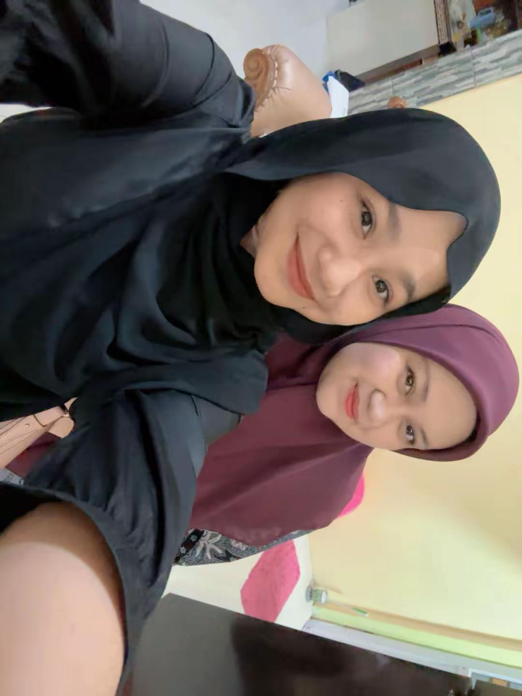
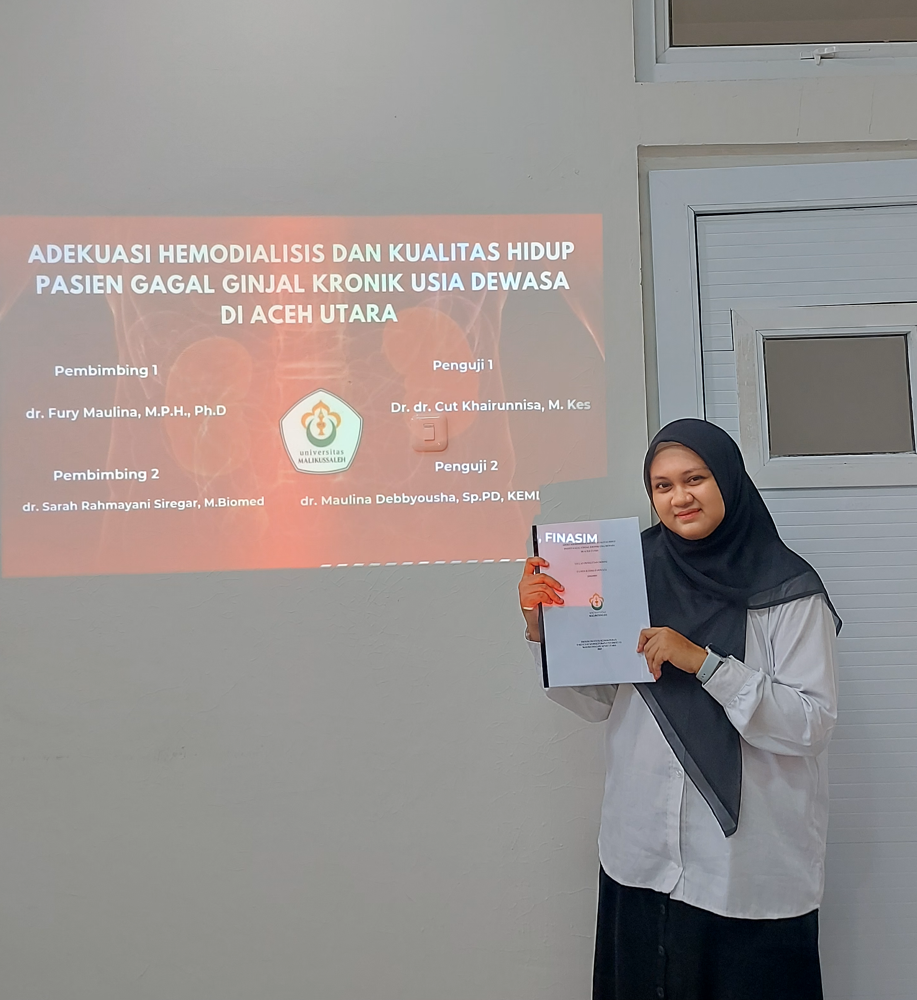
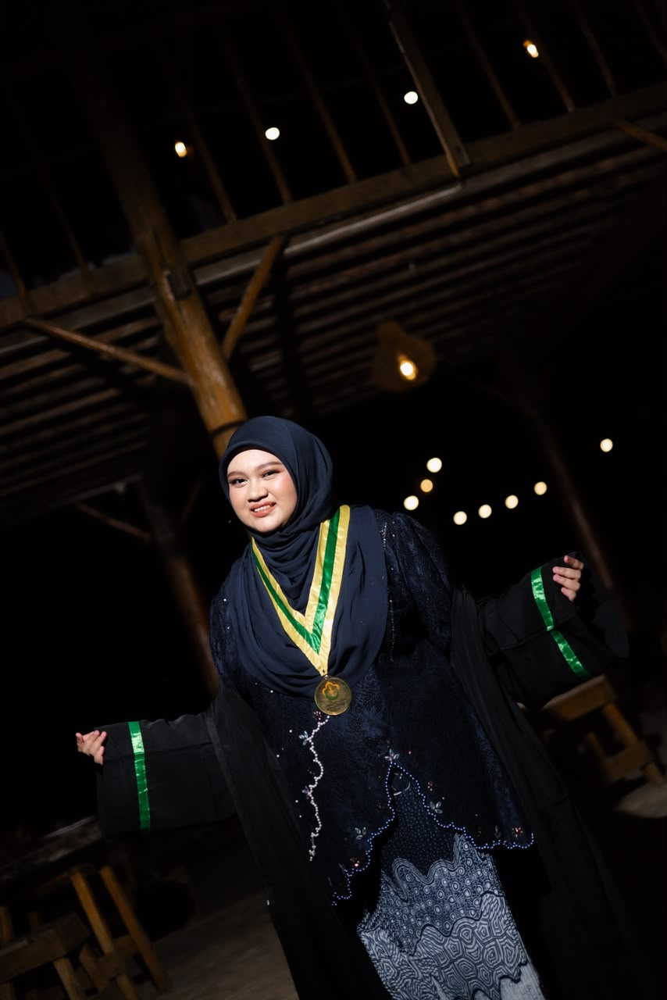

A DAY WORTH CELEBRATING
She
did it.
To my favorite person, on her biggest day.
Kak Patin ♡
CLASS OF 2026 · 30 SEPTEMBER 2026
Look how far you've come.
A little trip down memory lane ↓A COLLECTION OF LITTLE MOMENTS
Little pieces
of us.
Some moments become memories. Some people become home.
01 — OUR LITTLE MOMENTS

I really love this photo. We barely ever take pictures together because whenever we're together, taking photos is the last thing on our minds.
We always get so caught up in all the stories we want to share, all the little things we want to tell each other, and all the laughter in between.
Especially now that we're living far apart, between Aceh and Medan, I treasure every little moment we get to spend together.
But honestly, Kak, no number of photos or words could ever capture the whole story of us. And I'm so grateful that I get to be part of it.
02 — THE JOURNEY

This was taken when you were just beginning to prepare for your proposal seminar. The beginning of a journey that would test your patience, strength, and determination.
Looking back now, it's almost unbelievable how far you've come. From those early days of preparation to finally reaching this beautiful moment.
Honestly, I'm typing this with tears in my eyes, remembering how difficult the journey has been. There were so many challenges, but you kept going.
And I'm so happy and grateful that I got to witness your journey.
I hope you know how proud I am of you, Kak. You truly deserve every bit of happiness that comes with this achievement.
03 — YOUR SPECIAL DAY

And this is the last photo, the one that means the most to me.
Finally, after everything, you've made it. Seeing that happiness on your face makes me so incredibly happy, too.
I'm truly sorry I couldn't be there beside you on your special day. I wish I could have celebrated this moment with you in person.
But even from miles away, please know that I'm cheering for you with all my heart.
Congratulations on your graduation, Kak Patin. I'm so, so proud of you. Here's to everything beautiful that's waiting for you next. ♡
SOMETHING FROM MY HEART
A letter
for you.
There are some things I wanted you to know on your special day.
AND NOW...
The next
chapter is yours.
Happy Graduation!
Made with love, by Dara ♡